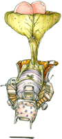

5 |
Préface |
 |
|
Un mot du producteur Cela fait maintenant 10 ans qu’est sorti l’original MDK2 depuis le premier MDK de Shiny Entertainment en 1997. Ce fut une super expérience de faire partie de l’équipe incroyablement talentueuse et motivée qui créa ce jeu. L’adaptation de MDK2 fut une experience en soit. Beaucoup de choses ont changé en 10 ans mais MDK2 est toujours distrayant, et je trouve que le jeu est toujours un challenge amusant. Un mélange étrange d’humour, de violence et de style ont donné cet aspect inclassable à la série des MDK. J’ai l’impression que cette MDK2 est la meilleure.  Pour les fans de l’original, cela vaut vraiment la peine d’y rejouer, et pour les nouveaux joueurs de MDK2, cela ne manquera pas de vous surprendre. Cette version contient une sauvegarde instantanée ainsi qu’une sauvegarde et chargement rapide. Pour moi, cela rend le jeu moins frustrant tout en restant un vrai challenge. Terminer MDK2 dans le mode le plus difficile est toujours un exploit dont on peut être fier. D’autres modifications concernent la manette Wii Remote. Je suis très satisfait de son utilisation dans le jeu. 
Les graphismes ont été optimisés pour rendre le jeu plus lumineux et plus facile à comprendre. De même le moteur a été optimisé pour la Wii et pour garder la meilleure fluidité tout au long du jeu. La taille de cette version est bien plus compacte mais nous avons pris soin de conserver la clarté d’origine et de l’améliorer où c’est possible. Cela a été un plaisir de travailler sur cette nouvelle version de MDK2, j’espère que vous apprécierez. Cameron Tofer Producteur |
 |
 |
 |